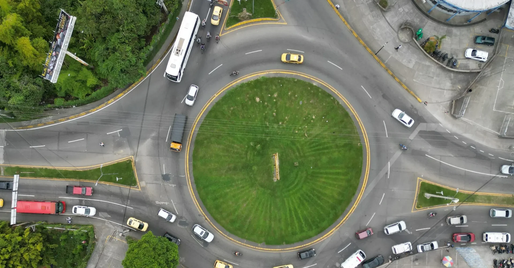
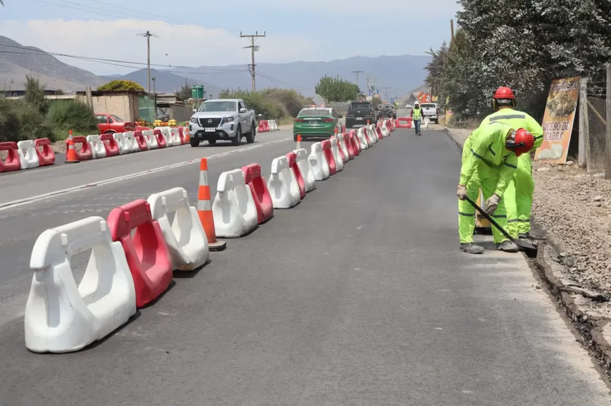
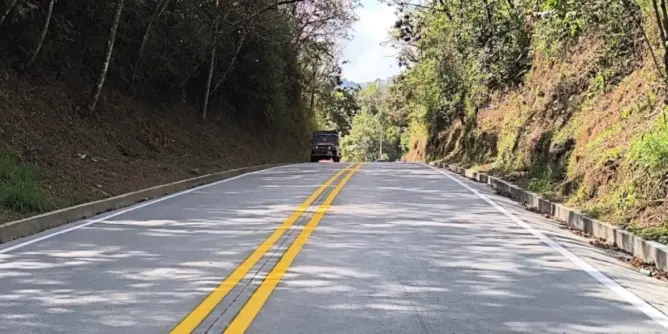
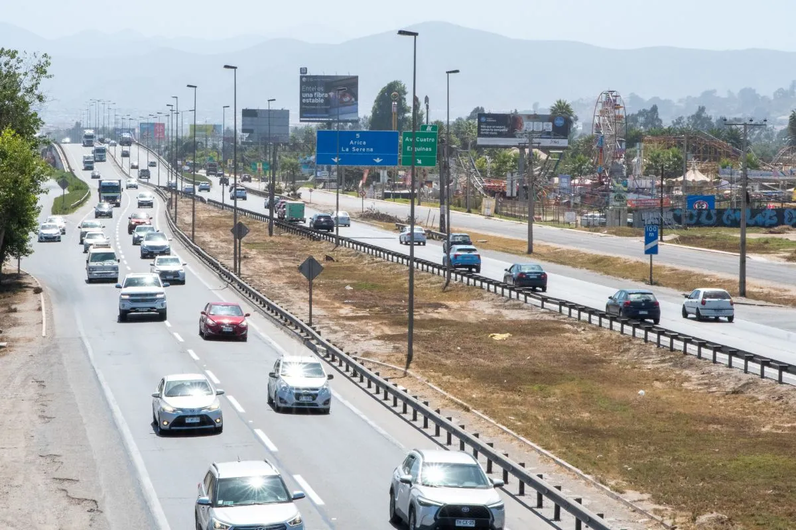
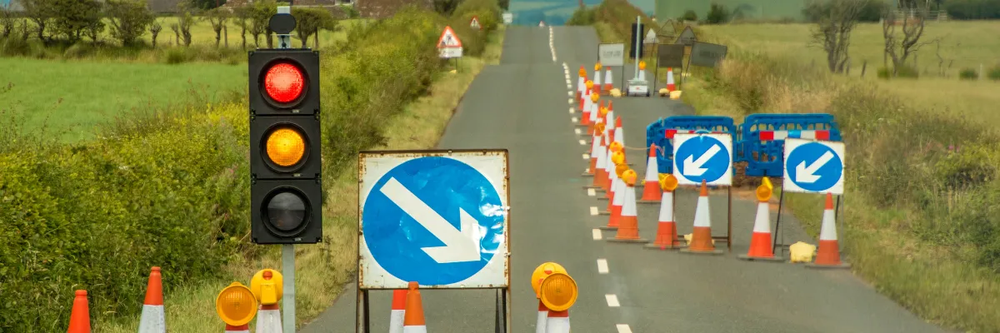
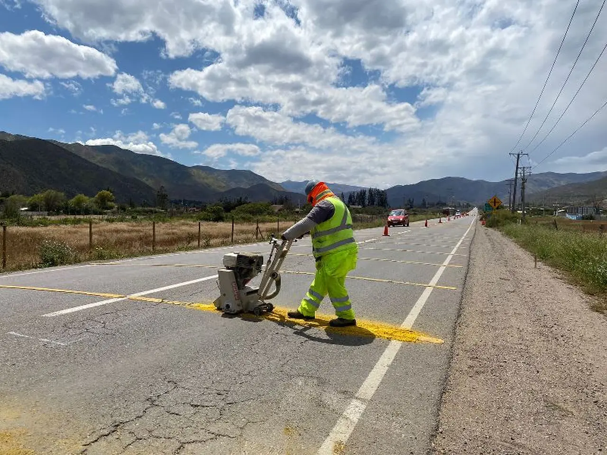

Desarrollamos proyectos de ingeniería vial y de tráfico para todo Chile. Optimizamos infraestructura de transporte, movilidad urbana y seguridad vial con rigor técnico y visión de futuro.

En EIT nos preocupamos de hacer bien la pega. Contamos con servicios especializados para cada tipo de proyecto, con un equipo que brinda confianza, seguridad y eficiencia.
Elaboración y tramitación de Informes de Mitigación de Impacto Vial bajo la Ley de Aportes al Espacio Público, en todas sus categorías.
Proyectos de acceso y pavimentación para SERVIU y MOP, con diseño estructural de paquetes de asfalto y hormigón.
Proyectos de señalización para Dirección de Tránsito y Dirección de Vialidad. También ejecutamos demarcaciones e instalación en terreno.
Proyectos de semaforización y modelaciones de tránsito para UOCT. Diseño de ITS y sistemas de gestión semafórica.
Gestión integral de proyectos de ingeniería civil, desde el diseño geométrico y estructural hasta la tramitación ante organismos competentes.
Asesorías en operaciones de transporte: gestión de flota, seguridad operacional, normativa vigente y comex.
Cada proyecto pasa por un proceso técnico riguroso, desde el análisis inicial hasta la entrega y seguimiento ante los organismos reguladores.
Levantamiento de datos, aforos de tráfico, estudios de origen-destino y diagnóstico de la situación actual de la red vial.
Diseño geométrico y estructural, modelación de flujos vehiculares, análisis de capacidad vial y simulación de escenarios.
Desarrollo de memorias de cálculo, planos, especificaciones técnicas y presupuesto conforme a normativas locales vigentes.
Gestión ante SEREMI, MINVU, SERVIU, MOP, Dirección de Tránsito y UOCT. Acompañamiento hasta la aprobación del proyecto.
Supervisión técnica de obras, instalación de señales y demarcaciones, y entrega de informes de cumplimiento.
Los proyectos de ingeniería vial y de tráfico son el instrumento que optimiza la infraestructura de transporte y la movilidad, tanto urbana como rural. Abarcan el diseño geométrico de caminos, gestión de pavimentos, seguridad vial y mitigación de impactos vehiculares en el entorno local.
En Chile, esto se traduce en la elaboración y tramitación de los Informes de Mitigación de Impacto Vial (IMIV), gestionados bajo la Ley de Aportes al Espacio Público. EIT tiene experiencia en todas las categorías de IMIV ante los organismos competentes.
Trazado de rutas, curvas, peraltes, intersecciones y paquetes estructurales (asfalto, hormigón).
Análisis de capacidad vial, flujos vehiculares, diseño de semaforización y sistemas ITS.
Señalización vertical y horizontal, barreras de contención y reductores de velocidad.
Elaboración y tramitación de IMIV bajo la Ley de Aportes al Espacio Público en Chile.
Aquí irán fotos reales de proyectos. Por ahora los espacios están reservados.

Imagen principal — ej: obra de pavimentación, señalización en terreno
Ej: intersección, IMIV en trámite
Ej: modelación de tránsito, semaforización
Ej: demarcación horizontal, señal instalada
Ej: proyecto terminado, equipo en terrenoEstudios de Ingeniería en Transporte para todo el territorio de Chile. Conoce cómo trabajamos para crear un mejor país.
Somos un equipo de ingenieros especializados en transporte y movilidad, con presencia en todo Chile. Nuestro enfoque es técnico, riguroso y orientado a resultados: desarrollamos proyectos que se aprueban y se ejecutan.
Entendemos que cada proyecto vial impacta la vida de las personas. Por eso combinamos análisis profundo, tecnología de modelación y conocimiento de la normativa chilena para entregar soluciones que realmente funcionan.
Trabajamos con municipios, empresas privadas, constructoras y organismos públicos, adaptando nuestra metodología a las necesidades específicas de cada cliente.
Desarrollamos y ejecutamos proyectos de ingeniería con rigor técnico y cumplimiento normativo.
Gestionamos proyectos de ingeniería civil de principio a fin, con coordinación ante organismos públicos.
Ayudamos a empresas a mejorar su operación de transporte: flota, normativa, seguridad y logística.
Integramos criterios de sostenibilidad y seguridad vial en cada diseño, pensando en el largo plazo.
¿Tienes un proyecto vial o de transporte? Cuéntanos. Respondemos rápido y con criterio técnico desde el primer contacto.
TikTok y LinkedIn próximamente.